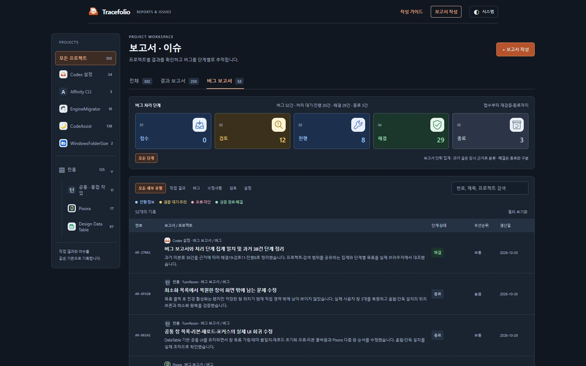
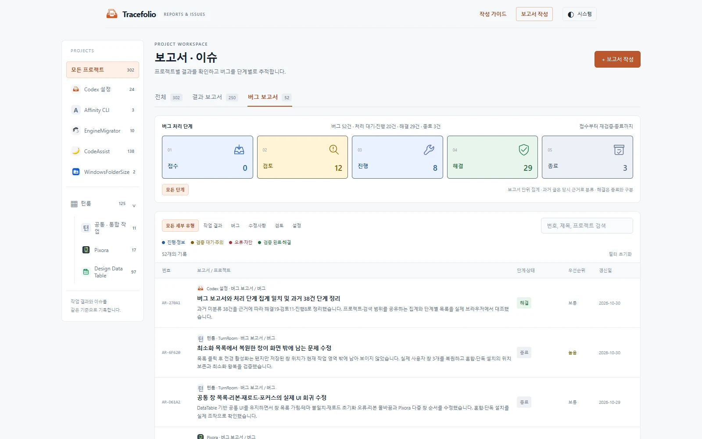

Codex 설정버그
Codex 설정버그버그 보고서와 처리 단계 집계 일치 및 과거 38건 단계 정리
해결과거 미분류 38건을 근거에 따라 해결19·검토11·진행8로 정리했습니다. 프로젝트·검색 범위를 공유하는 집계와 단계별 목록을 실제 브라우저에서 대조했습니다.
작업 결과
기존 버그 51건은 접수0·검토12·진행8·해결28·종료3으로 합계51건이 됩니다. 이 수정 보고서도 해결 단계로 등록되므로 등록 후에는 버그52건·해결29건으로 표시됩니다. 원문과 과거 테스트 결과는 변경하지 않았습니다.
변경 내용
재현 조건
Tracefolio 정적 HTML/JavaScript · Windows · 실제 headless Chrome 156.0.8078.48
재현 순서
메인에서 모든 프로젝트를 선택하고 버그 보고서 총수와 5단계 카드의 합계를 비교했습니다. 프로젝트와 검색을 변경하여 탭 수와 단계별 결과를 대조했습니다.
기대 동작
보고서 단위 버그 총수는 단계별 합계와 일치하고, 프로젝트·검색 변경 시 같은 범위에서 다시 계산되어야 합니다.
실제 동작
기존51건 가운데 과거38건이 단계 미분류로 분리되어 5단계 카드에는13건만 표시되었습니다. 탭 배지는 고정된 전체 수여서 프로젝트·검색 후 카드 수와 범위도 달랐습니다.
원인
tracker-page.mjs는 workflow 없는 버그를 unclassified로 분리하고 5단계 카드에서 제외했습니다. assets/app.js는 단계 수만 필터 범위로 재계산하고 보고서 분류 배지는 갱신하지 않았습니다.
적용 내용
과거38건의 원문을 대조해 해결19·검토11·진행8로 분류했습니다. 판단 이유·정확한 원문 인용·SHA256·검토 시각은 migration/workflow-review-2026-10-30.json에 보존합니다. 원문은 수정하지 않고 빌드 시 검증된 분류를 적용하며 개별 HTML에 근거를 표시합니다. 현재 재실행 또는 제품 전체 완수를 의미하지 않습니다.
trackerCounts 공통 함수로 탭과 단계의 프로젝트·검색 범위를 통일했습니다. 처리 대기·진행은 접수+검토+진행 합계이며 해결·종료와 구분합니다. 미분류가0이면 별도 버튼을 숨깁니다.
검증
등록 후 버그52건=단계합계52건·미분류0건을 재확인했습니다. 실제 Chrome에서 프로젝트·상위 묶음·검색·5단계 조합51회 대조, 버그 총수=단계 합계 및 카드 선택 수=보이는 목록 수 확인. 브라우저 오류0. 단위 검사25/25통과. 원문38건의 해시·인용 검사와 변조 거부 확인. 기존230개 이전 원문·4211개 의존성과261개 편집 기록 해시 검사 통과.


캡처는 1600×1000 실제 사이트 화면입니다. WebP 다크81,708바이트·라이트78,484바이트로 압축 후 글자와 숫자를 확인했습니다. 실행 근거
첫 Pages 빌드는 과거 글1건의 CRLF/LF 차이로 해시 검사가 실패했습니다. 38건 모두 Git 커밋 내용과 대조해 내용 동일성을 확인하고 LF 정규화 해시로 수정했습니다. 원래 관측 바이트 해시는 observedRawSha256에 보존합니다. LF·CRLF 동등 입력은 통과하고 내용 변경은 거부하는 회귀 검사도 통과했습니다.
남은 사항
과거 제품의 동작을 이번에 재실행한 것은 아닙니다. 동일 이슈의 이전 이력도 보고서 단위로 세며 실제 결함 개수로 해석하지 않습니다. 배포 성공은 푸시 후 GitHub Actions와 외부 URL로 별도 확인합니다.
작업 시간
- 제안 시간: 10~20분
- 실제로 완료된 시간: 구현 및 최초 브라우저 검증 기록: 시작 2026-10-30 15:31:09 KST, 경과 346초, 기록 2026-10-30 15:36:54 KST. 후속 배포 확인 시간은 채팅 최종 보고에 구분합니다.
- XERJ: 미사용 — 이 설정 저장소에 XERJ MCP와 검색 스크립트가 제공되지 않아 rg 및 현재 소스·실제 브라우저 실행으로 대조했습니다.